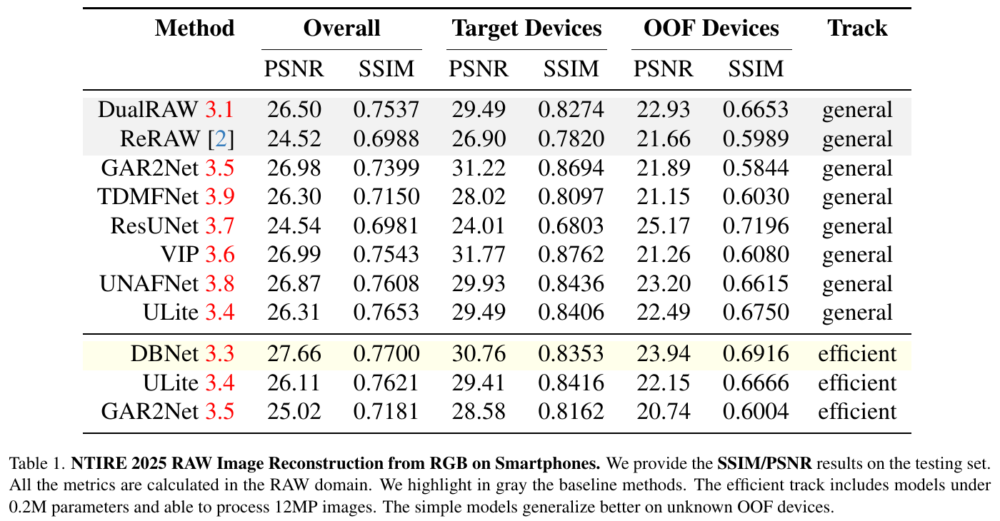
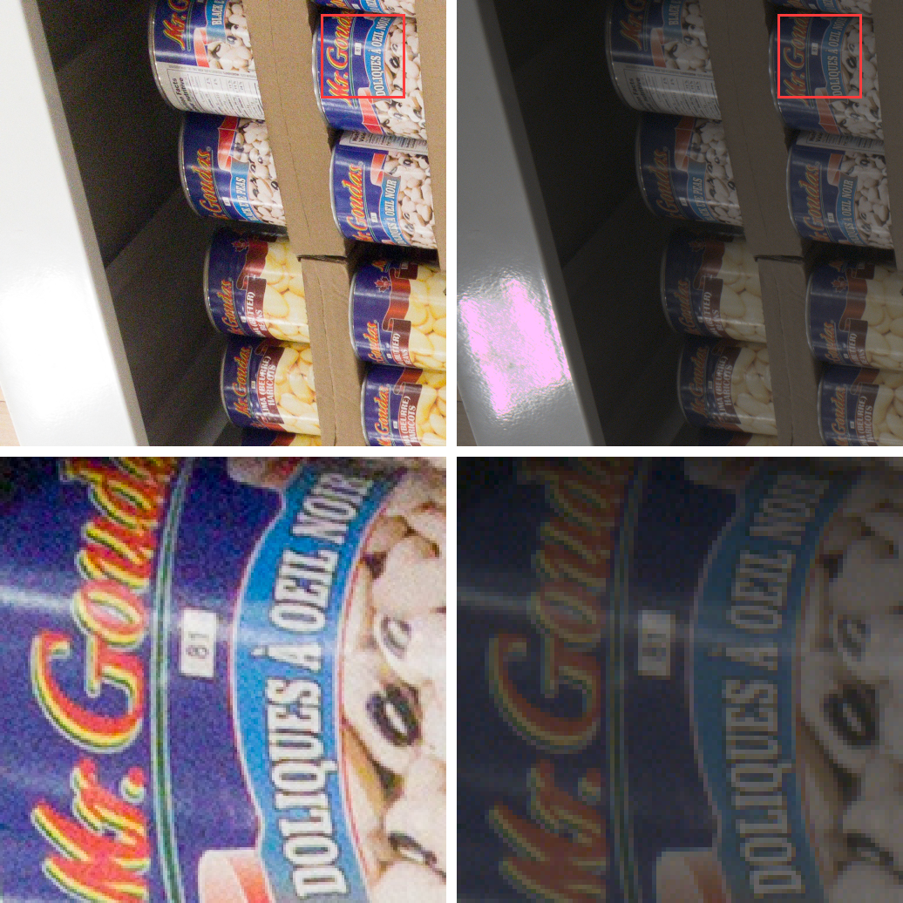
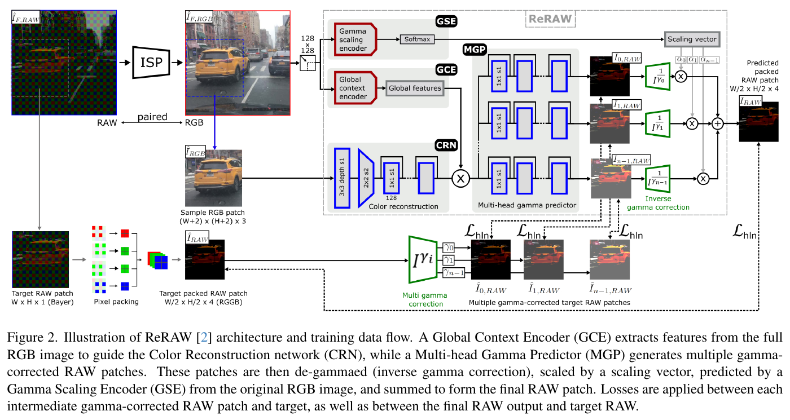
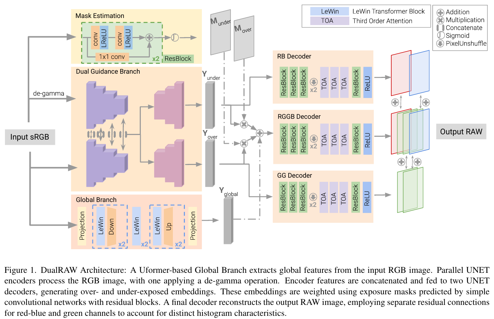
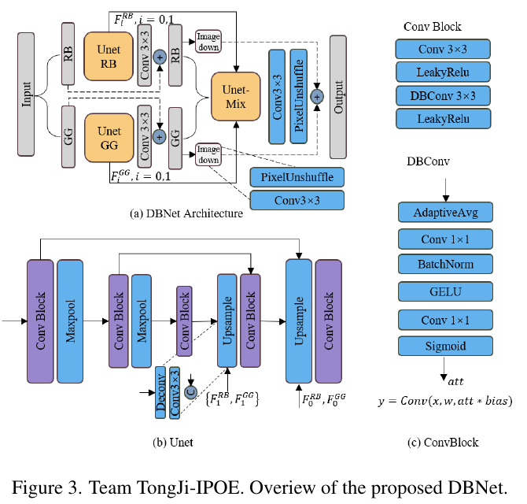
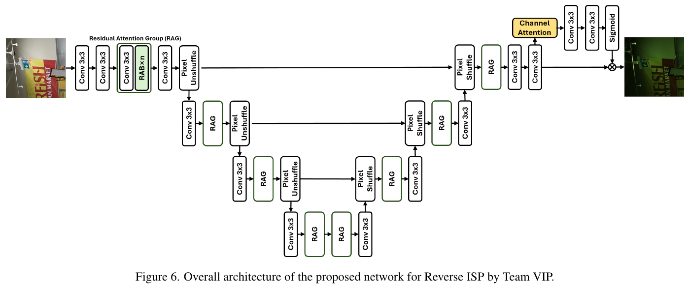
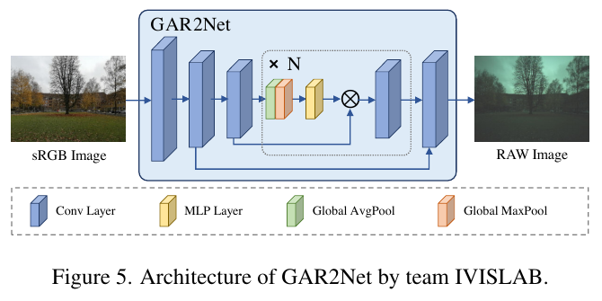
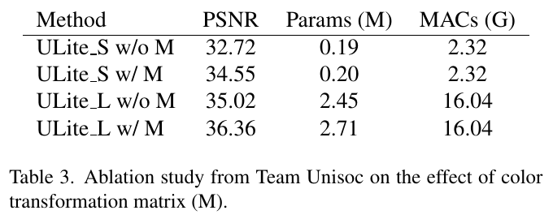

论文
NTIRE 2025 手机 RGB→RAW 重建挑战赛报告：iPhone X / Galaxy S9 的机内成片逆回 12 bit RAW，第一名是 0.39M 参数的 DBNet

代码与数据来源说明：报告首页给出挑战赛仓库 mv-lab/AISP。本页
repo-aisp/是它的克隆（HEAD84d4bb4，2025-03-05）。仓库里没有 NTIRE 2025 这一届的代码、评测脚本和定性结果（报告说「qualitative results in the challenge repository」），只有上一届 AIM 2022 的基线、评分脚本和部分队伍代码，所以评分逻辑只能引上一届的。基线 ReRAW 的官方仓库 SonyResearch/ReRAW（MIT，repo-reraw/，HEADe2b7ba2，2025-09-24）是论文原版的切块实现，不是报告里说的「整图一次前向」版本。参赛队里只找到 Unisoc（ULite）公开了代码：heouchen/NTIRE_2025_RGB2RAW_UNISOC（repo-ulite/，HEAD7592a56，2025-04-08，README 未写许可）。第二名 VIP 是在 AIM 2022 MiAlgo 方案上改的，MiAlgo 的代码在 q935970314/AIM22-ReverseISP-MiAlgo（repo-mialgo/，HEADdb9f3f3），也是 AISP 仓库里的子模块。DBNet、VIP、GAR2Net、UNAFNet、TDMFNet、ResUNet、DualRAW 在 GitHub 上按队名、方法名和数据集链接都没有搜到公开代码，这些方案只能按报告文字分析。数据集在 Hugging Face marcosv/rgb2raw。本页没有下载完整数据，而是用 HTTP Range 读取三个 zip 的目录，统计文件数，再取了 5 对样本块和 5 个元数据文件做核对（§2.2）。
专项定位：本页属于「手机照片 → 相机画质：细节与质感迁移」专项（入口：phone2camera-2026 调研页）。专项已经读过四种 sRGB → RAW 方法：unprocessing-2018、raw-diffusion-2024、raw-flow-2026、rawgen-2026。本报告的基线 ReRAW 另有精读 reraw-2025。前几篇训练和评测用的 RGB 都是 rawpy 从同一张 RAW 渲出来的，这份挑战赛数据不同，RGB 是手机 ISP 的真实输出。本页要回答两个问题：逆一条真实手机 ISP 有多难，这份带 iPhone X 的配对数据能为专项做什么。
任务
输入 1024×1024 的手机 sRGB，输出 512×512×4 的打包 RGGB，12 bit，黑白电平已校正。测试时不给任何元数据，同一个模型要同时处理两台已知手机，还要泛化到没见过的手机（§2.1）。
数据
训练集来自 Afifi 的 RAW-to-RAW 数据集：iPhone X 162 张原图（972 块），S9 79 张（474 块），另有低质量子集 582 / 924 块。RGB 是机内 ISP 输出，和 RAW 来自同一次拍摄，抽查的 4 对都是像素对齐的。val / test 只公开 RGB（§2.2）。
评测
12 bit RAW 上逐图 PSNR/SSIM 取平均。两档参数上限：通用 1–5M，高效不到 0.2M；还要求 12MP 一次前向。Overall 实际是 72 块已知设备加 60 块 X90 的加权平均（§2.3）。
前几名
DBNet（0.39M，按 RB / GG 分组、动态偏置卷积）27.66，VIP（MiAlgo 换上 PixelShuffle）26.99，GAR2Net（全局池化门控）26.98，UNAFNet（NAFBlock U-Net）26.87。共同点是都把整图级的全局统计注入网络（§2.5–2.8）。
给本专项的结论
这是唯一公开的「iPhone 机内成片 ↔ Bayer RAW」逐像素配对，可以用来训练 iPhone 逆 ISP、收集白点轨迹、给伪 RAW 当真实分布参照。但它只有 2017 年的 12MP iPhone X，没有 ISO，每张图只放出约一半画幅（§6）。
1. 出发点：逆一条真实的手机 ISP
RAW 和传感器读数成线性关系，位深 12–14 bit，噪声没被 ISP 改动过，去噪、去模糊、超分这类逆问题在 RAW 域做更合适。问题是 RAW 数据集少、采集贵，而 sRGB 数据又多又公开。于是有了「从 sRGB 重建 RAW」：一类方法假设一条模型化的 ISP，靠元数据（白平衡增益、颜色校正矩阵）逐步逆回去，比如 unprocessing-2018；另一类直接从 RGB 学到 RAW 的映射，不要元数据（报告 §1）。打个比方，这相当于只拿到冲洗、修过的照片，去倒推底片上原本记录了什么。
这一届是第二届。第一届是 AIM 2022 Reversed ISP（Conde 等，arXiv:2210.11153，ECCV 2022 Workshops），用的是 Samsung S7 和 Huawei P20 Pro 两台手机，每台一个赛道。NTIRE 2025 的变化有三处（§2.9 有完整对照）：
- 换成多台手机、一个模型。训练集同时有 iPhone X 和 Galaxy S9，测试再加上没见过的手机。报告给的理由是手机 ISP 比单反复杂，降噪、锐化、局部色调映射都更重，逆起来更难。
- 测试时没有元数据。训练集附带每张图的白平衡增益和颜色矩阵，可以用来训练，测试时一律不给。
- 强调效率。按参数量分两档，要求 12MP 一次前向。报告说有 150 多名参与者。
报告第 3 节的方法描述由各队自己提供（报告 §3 开头的方框）。所以这一节的「消融」都是各队自报，没有统一协议。
ISP / 逆 ISP
相机里把 RAW 变成成片的处理流水线，包括白平衡、去马赛克、颜色矩阵、色调曲线、降噪、锐化、压缩。逆 ISP 是把成片推回 RAW。
打包 RGGB（packed RAW）
Bayer 马赛克每个 2×2 格子里有 R、G、G、B 各一个像素，把它们拆成 4 个半分辨率通道，H×W 的 RAW 就变成 H/2×W/2×4。
黑电平 / 白电平
传感器无光时的读数偏置和饱和值。iPhone X 是 528 / 4095，校正就是减去黑电平再除以两者之差。
Target / OOF 设备
Target 是训练集里有的手机（iPhone X、S9），OOF 是训练时没见过的手机（Vivo X90，报告还写了 S21）。
白平衡增益 / CCM
白平衡给 R、G、B 各乘一个系数，让灰色看起来是灰的。CCM 是 3×3 矩阵，把相机自己的 RGB 转到标准 sRGB。
通用 / 高效赛道
按参数量分档：通用 1–5M，高效不到 0.2M。两档都要求 12MP 图一次前向跑完。
LQ 子集
组织者质检时判为噪声或模糊过重的配对，单独放在 lq-iphone / lq-samsung 两个目录，参赛者可以自己决定用不用。
TTA
测试时增强：把输入翻转、旋转后分别推理，再变换回来取平均。
2. 方法：任务、数据、评测，以及排名靠前的方案
2.1 任务定义
每个样本是一块手机 sRGB \(I \in [0,1]^{1024\times1024\times3}\)（8 bit PNG），目标是同一位置的打包 RAW \(R \in [0,1]^{512\times512\times4}\)。RAW 已统一成 RGGB 排列、做过黑白电平校正，再除以 \(2^{12}-1\)。参赛方案学一个映射：
—— 翻译: 网络吃进一张 RGB，吐出一张长宽各减半、通道变成 4 个（R、G1、G2、B）的 RAW。每个输出像素对应输入里一个 2×2 的格子。
训练时可以读取每张原图的元数据（白平衡、颜色矩阵等），测试时什么都不给，参与者只能自己从图像里推断 ISP 参数（报告 §2.1）。所以这个任务和 unprocessing-2018 那种「拿着 CCM、白平衡增益逐步逆回去」不同。网络必须从一张图本身猜出拍摄时的白平衡和曝光，还要逆掉手机的局部处理。
2.2 数据集：来源、组成，以及 iPhone X 部分

train/iphone-x/0155_0 自绘）。上左：机内 ISP 输出的 RGB（1024² 面积平均缩到 512²，与 RAW 同分辨率）。上右：同一块打包 RAW，只乘了元数据里的 as-shot 白平衡增益（1.698, 1, 2.836）再取 1/2.2 次幂，没有颜色矩阵、色调映射和锐化。下排是红框区域放大，左边是 RGB 原分辨率，右边是 RAW（每个方块是一个 2×2 Bayer 格）。RAW 整体更暗、颜色更淡，机内成片则提亮、加饱和、做了局部对比度。左侧墙面的高光在 RAW 里 R 通道已到 4095、B 接近饱和，乘白平衡增益后呈品红，这是简单可视化带来的伪影，也说明逆 ISP 在高光处必须输出截断值。用相位相关检查 RAW 绿通道和 RGB 绿通道，位移为 0。来源。 报告写训练集「只有 iPhone X（972 对）和 Samsung S9（474 对）」，是 RAW2RAW 数据集（Afifi & Abuolaim, Semi-Supervised Raw-to-Raw Mapping, BMVC 2021，arXiv:2106.13883）筛选后的子集（报告 §2.1）。那份数据集的 GitHub 说明写的是 S9 和 iPhone X 两台手机：每台 196 张无配对图，另有 115 对测试配对和 22 对锚点配对，发布形式是 DNG 加元数据（mahmoudnafifi/raw2raw，MIT）。专项的 merit-2026 在 Table 2 里用的也是这份 S9 / iPhone X 数据，不过那里拿它做 RAW→RAW。
RGB 是怎么来的。 报告和数据集卡片都写明：RGB 是手机成像管线（ISP）的输出，「没有用 rawpy 这类简单软件渲染」，以 8 bit 无损 PNG 保存。上一届的 AIM 2022 报告 §2.1 也把这份数据描述为「自然场景 RAW 与相机 ISP 渲染的 RGB 配对」。至于手机端是用什么方式同时拿到 RAW 和成片的，两份报告都没写。这一点决定了这份数据和 raw-diffusion-2024、raw-flow-2026、reraw-2025 自己的实验有本质区别：那几篇的 RGB 是 rawpy 用同一张 RAW、按固定参数渲染的，是全局、确定的映射；这里的 RGB 带着手机 ISP 的降噪、锐化和局部色调映射。我抽了 4 对块做检查：RGB 与 RAW 之间用逐通道全局曲线拟合，残差标准差有 0.02–0.07（0–1 量程）；RGB 亮度的拉普拉斯能量是 RAW 绿通道（gamma 2.2）的 1.6–2.1 倍。这和「机内做了局部处理和锐化」相符，但单凭这几个数字证明不了来源。
对齐。 同一次拍摄的 RAW 与成片，几何上天然对齐。用相位相关检查 4 对样本（iPhone X 两对、S9 一对、LQ iPhone 一对），RAW 绿通道与 RGB 面积下采样后的绿通道之间的位移都是 0（打包分辨率下）。
用 HTTP Range 读出的文件构成（2026-10-29，数据集提交 91a105e）：
| 目录 / 文件 | 内容 | 块数 | 原图数（按文件名去重） | 元数据 .pkl |
|---|---|---|---|---|
train/iphone-x/ |
iPhone X，通过质检 | 972 | 162（每张 6 块） | 265 个（多出的是被剔除图像的） |
train/samsung-s9/ |
Galaxy S9，通过质检 | 474 | 79（每张 6 块） | 236 个 |
train/lq-iphone/ |
iPhone X，噪声或模糊过重 | 582 | 97 | 无 |
train/lq-samsung/ |
S9，噪声或模糊过重 | 924 | 154 | 无 |
val_rgbs_in.zip |
验证集，只有 RGB | 120 | 20（每张 6 块） | 无 |
test_rgbs.zip |
测试集，只有 RGB：ip-ss_* 72 块，x90_* 60 块 |
132 | 12 + 5（X90 每张 12 块） | 无 |
几点要说明：
- 「972 对」是 972 个块，不是 972 张照片。 iPhone X 通过质检的只有 162 个场景，加上 LQ 也只有 259 个。训练集四个目录合计 2952 对，Res-CSP 队在报告里写的「2952 对」就是这么来的。
- 块大小。 每个 RAW 块是
uint16、512×512×4（文件 2,097,280 字节），RGB 块是 1024×1024×3。报告训练段写的「1024×1024×4 的 HR RAW」与文件不符，可能是把 1024×1024 的 Bayer 马赛克和打包后的 4 通道写混了。 - 位深。 iPhone X 的元数据是白电平 4095、黑电平 528，原生就是 12 bit，校正后约有 3567 个有效灰阶（样本块里有 3479 个不同值）。S9 的白电平是 1023，原生 10 bit，拉伸到 12 bit 后相邻取值的间隔是 4（样本块只有 1021 个不同值）。所以「统一成 12 bit」对 S9 只是换了量程，精度没有增加。
- 元数据有什么。 用
pickletools只解析不执行，.pkl里的键是 rawpy 的字段：white_level、black_levels、camera_whitebalance（as-shot 增益）、daylight_whitebalance、color_matrix（3×4，相机 RGB → sRGB，每行和为 1）、cfa_pattern、sizes（iPhone X 原图 4032×3024，flip=6）、tone_curve。没有 ISO、曝光时间、焦距。 我比较了 4 个 iPhone X 文件，color_matrix和daylight_whitebalance完全相同，只有 as-shot 白平衡逐图变化。也就是说，逐图的颜色信息只有白平衡增益。 - 画幅。 iPhone X 每张图只给 6 块 1024² 的 RGB，合计 3072×2048，约占 4032×3024 原图的一半。块在原图里的位置没有公开。
- 测试集里找不到 S21。 报告写 OOF 设备是「Samsung S21 和 Vivo X90」，数据集卡片写「iPhoneX、SamsungS9、Samsung21」三台手机，但公开的测试文件只有
ip-ss（iPhone / Samsung）和x90两种前缀。
下载与许可。 数据在 Hugging Face marcosv/rgb2raw，不需要申请。卡片标的是 MIT 许可；来源 raw2raw 仓库的 README 也写 MIT。文件：train_rgb2raw.zip 8.73 GB（2025-02-26 上传），val_rgbs_in.zip 208 MB，test_rgbs.zip 165 MB（2025-03-27 上传）。提交入口是 Codalab competitions/21648，开发阶段 2025-02-16 开始，测试阶段 2025-03-24 至 03-31，需要登录。val 和 test 的 RAW 真值没有公开，所以报告里的分数无法离线复现，X90 和 S21 的 RAW 一张也拿不到。
2.3 评测协议与效率约束
报告只写了一句：「在未压缩的 12 bit RAW 上算 PSNR 和 SSIM」（§2.3）。这一届的评分脚本不在 AISP 仓库里，上一届 AIM 2022 的在：
repo-aisp/aim22-reverseisp/scoring/evaluation.py:L12-L33 — AIM 2022 的评分函数：逐图 PSNR（峰值 1），SSIM 对 4 个通道分别算再平均
def output_psnr_mse(img_orig, img_out):
squared_error = np.square(img_orig - img_out)
mse = np.mean(squared_error)
if mse == 0:
return 999
psnr = 10 * np.log10(1.0 / mse)
return psnr
def _open_img(img_p):
return np.load(img_p, allow_pickle=True).astype(float) / 1024.
def compute_psnr(ref_im, res_im):
return output_psnr_mse(ref_im, res_im)
def compute_mssim(ref_im, res_im):
ref_img = ref_im
res_img = res_im
channels = []
for i in range(4):
channels.append(ssim(ref_img[:,:,i],res_img[:,:,i],
gaussian_weights=True, use_sample_covariance=False))
return np.mean(channels)
上一届 RAW 是 10 bit，所以除以 1024。同一个文件 L101-L102 对所有图的 PSNR、SSIM 直接取平均。换成这一届的 12 bit，就是：
—— 翻译: 每张图先算 4 个通道所有像素的均方误差，再换成分贝，最后对所有测试图取平均。均方根误差为 1% 量程时 PSNR 是 40 dB，3% 时约 30 dB，6% 时约 24 dB。
Overall 列是怎么算的。 如果 Overall 是全部测试图逐图平均，它应该等于 Target 和 OOF 按图数的加权平均。我对表 1 每一行反推权重：PSNR 列和 SSIM 列的 Target 权重都在 0.543–0.547，正好是 72/132 = 0.545，对应公开测试集里 72 块 ip-ss 和 60 块 x90：
—— 翻译: 总分是两部分按图数加权：已知设备 72 块，占 54.5%；未知设备 60 块，占 45.5%。如果按正文写的 120 块和 60 块，权重应该是 2/3。
按这个公式代回去，11 行里有 10 行的 PSNR 和 SSIM 都和表里一致，误差不超过 0.01。只有 TDMFNet 的 Overall PSNR 对不上：Target 28.02、OOF 21.15，算出来是 24.90，表里写的是 26.30。它的 SSIM（0.7157 对 0.7150）却是对得上的。所以很可能是这一格写错了，改正后 TDMFNet 会从第 6 名掉到倒数第二。正文写的「target 测试集 120 张」更像是验证集的数量（val 正好 120 块）。
效率约束。 报告表 1 的说明只有一句「高效赛道限 0.2M 参数，并能处理 12MP 图」。完整规则在 Codalab 的 Evaluation 页：每队最多交两个模型，一个参数在 1M 到 5M 之间，一个少于 0.2M（「real-time conversion」）；两者都要能一次前向处理 12MP；最终报告会列参数量和 MACs/FLOPs。规则页还写「最终测试集是 12MP sRGB」，但 2025-03-27 上传的 test_rgbs.zip 是 132 张 1024×1024 的块。按报告自己的数字，有两处不合规：
- DBNet：表 7 写 0.39M，接近高效赛道上限的两倍，却排在高效赛道第一。
- ULite-S：按
repo-ulite/ULite_m.py手算参数量是 201,588（不含颜色矩阵分支是 193,396），与报告表 3 的 0.20 / 0.19 一致，超出「少于 0.2M」1,588 个。差得很少，但规则是硬线。
报告没有给统一的运行时间。表 2 只有 DualRAW 一项：H100 上 1024² 87 ms，4096×3072 约 1.02 s。
2.4 两个基线：ReRAW 与 DualRAW（都来自 Sony AI）

ReRAW（Berdan 等，CVPR 2025，arXiv:2503.03782）是报告认定的「单反 / 无反 RAW 重建的 SOTA」。它的输出是 10 个 gamma 空间预测的加权和：
—— 翻译: 每个头在不同的「亮度压缩程度」下预测 RAW（γ 越小，越强调暗部），预测完再展开回线性空间，然后按整图决定的 10 个权重 α 混合。g 是整图提取的 128 维向量，逐通道乘到局部特征上。
repo-reraw/resources/models.py:L47-L71 — 前向：全局特征逐通道相乘，10 个头先截到非负，再取 1/γ 次幂后加权求和
def forward(self, x, global_img):
b, c, h, w = global_img.size()
global_features = self.global_context_encoder(global_img)
global_features = global_features.view(b, self.hidden_size, 1, 1)
global_features = global_features.repeat(1, 1, self.target_size[0], self.target_size[1])
x = self.color_reconstruction(x)
x = x * global_features
scaling = self.gamma_scaling_encoder(global_img)
scaling = self.softmax(scaling)
y = 0
outputs = []
for head_no, head in enumerate(self.heads):
scale = scaling[:, head_no : head_no + 1].view(b, 1, 1, 1).repeat(1, 4, 1, 1)
y0 = torch.clip(head(x), 0, None)
y += torch.pow(y0, 1 / self.gammas[head_no]) * scale
outputs.append(y0)
outputs = torch.cat(outputs, dim=1)
return y, outputs, scaling
每个头的监督目标是 \(R^{\gamma_k}\)（repo-reraw/resources/dataset.py:L56-L61），所以这里取 \(1/\gamma_k\) 次幂把它展开回线性，代码和 Fig. 2 一致。训练块用「分层采样」挑选，按 RGB 块均值亮度分 10 档：
repo-reraw/stratified_sampling.py:L54-L80 — 分层采样：每个通道按块亮度分档，先抽档再抽块；抽到第 10 档或空档时退回随机位置
bins = np.linspace(0, 1, cfg_sample["n_bins"]+1)
counter = 0
for c in range(3):
idx = np.digitize(bright[:, :, c], bins)
locations = [np.where(idx == i) for i in range(1, cfg_sample["n_bins"])]
# ###############
prob = [int(len(loc)) > 0 for loc in locations]
prob = [p / np.sum(prob) for p in prob]
sampled_indexes = [x for x in range(len(prob))]
# ###############
for i in range(n_samples):
if cfg_sample["type"] == "random":
y = np.random.randint(1, count_h - 1)
x = np.random.randint(1, count_w - 1)
else:
try:
sampled_index = np.random.randint(cfg_sample['n_bins'])
sampled_location = np.random.randint(len(locations[sampled_index][0]))
y = locations[sampled_index][0][sampled_location]
x = locations[sampled_index][1][sampled_location]
except:
y = np.random.randint(1, count_h - 1)
x = np.random.randint(1, count_w - 1)
locations 只收了 idx = 1…9 这 9 档，最亮的 [0.9, 1) 那一档从来不在列表里；randint(10) 抽到 9 时会越界，进 except 退回随机位置；prob 算出来没有用到。也就是说，「均衡各亮度档」只覆盖前 9 档，空档和第 10 档都按均匀随机补。对手机数据，这意味着高光块并没有被刻意多抽。reraw-2025 §2.6 对这段有更细的核对。
报告里 ReRAW 的这一届配置（§3.2）：训练数据混合了组织者给的干净和有噪声配对，外加 FiveK 的 Nikon、Canon 子集；约 3 万对 66×66 RGB / 32×32 RAW 块；batch 32、128 epoch、每 16 epoch 余弦热重启、学习率 1e-3 → 1e-5。这些超参和仓库 config/cfg_example.py 一致（epoch 数除外，示例配置是 4）。按代码数参数量是 23,767,154，其中两个 ResNet18 占 2240 万，超过了通用赛道 5M 的上限，好在基线不参加排名。还有两处要注意：报告说这一届的 ReRAW「可以整图一次前向」，公开仓库的 convert_image 却是 64×64 不重叠切块（repo-reraw/resources/utils.py:L25-L88）；load_raw 只会用 rawpy 读 DNG（utils.py:L10-L22），拿公开代码直接跑这份 .npy 数据，要先改读取部分。
成绩：Overall 24.52 / 0.6988，Target 26.90，OOF 21.66。用了额外数据，却是全场最低。reraw-2025 在五个单反数据集上报的是 30–41 dB。两者的差别主要在 RGB 的来源：rawpy 的固定全局渲染，对比手机 ISP 的局部处理。4×4 的局部感受野加一个整图向量，可以逆一条全局的逐像素曲线，逆不了「同一个 RAW 值在画面不同位置被映射成不同 RGB」的局部色调映射。这是从结构上做的推断，报告没有做验证这一点的实验。

DualRAW（Besbinar、Iso，Sony AI）是第二个基线，借鉴自 RawHDR（Zou 等，ICCV 2023）：
—— 翻译: 暗部的信息主要靠「欠曝」那一路，亮部靠「过曝」那一路，由掩码决定每个像素用哪一路，再加上整图的全局特征。红蓝通道的补充只从欠曝特征来，绿通道的补充只从过曝特征来，对应「红蓝在暗处难、绿在亮处难」的观察。
损失是 log-L2 + 截断 L1 + 0.2 掩码损失 + 0.5 LPIPS，只用组织者给的训练集，1024² 整图训练，1.6M 参数，H100 上训了 40 小时。成绩 26.50 / 0.7537（Target 29.49，OOF 22.93）。参赛方案里只有 DBNet 比它高出 1 dB 以上，VIP、GAR2Net、UNAFNet 只高 0.4–0.5 dB，其余都低于它。DualRAW 没有公开代码。
2.5 第一名 DBNet（同济 TongJi-IPOE，高效赛道）

DBNet 有三个设计（报告 §3.3）：
- 按 RB / GG 分组重建。 借鉴联合去马赛克去噪的 SGNet：绿通道占 RAW 一半像素，难度和红蓝不同，所以先把输入「初始化成 RGGB 模式」，分成 RB、GG 两组，各用一个 U-Net，再由 Unet-Mix 融合。DualRAW 也按通道组分开，两者思路相同。
- 动态偏置卷积 DBConv。 动态卷积（CondConv、DyConv、ODConv）让卷积核随输入变化，但参数会成倍增加。DBNet 受 ViT「寄存器」的启发，只让偏置随输入变化：
—— 翻译: 卷积核 W 是固定的，偏置 b 乘上一个 0 到 1 的系数 att，这个系数由整张特征图的平均值算出来。效果是给每个通道加一个随整图变化的偏移量，相当于网络每一层都能按整图调一次亮度和颜色的基准。
- 只在输出处下采样。 用 PixelUnshuffle 加 1×1 卷积，不用插值，理由是插值下采样会带来特征偏差。
训练分三段，全部用 128×128 块、只用官方数据：固定学习率 1e-3 训 92k 步，余弦退火到 1e-6 训 208k 步，再以 1e-5 微调 300k 步，单卡 3090Ti 共 24 小时，参数 0.39M。成绩 27.66 / 0.7700，Target 30.76（第三），OOF 23.94（第二）。两项都不是最好，但最均衡，所以总分第一。报告没有 DBNet 的消融，分不清 RB / GG 分组、DBConv 和全分辨率处理各贡献了多少。
为什么一个 0.39M 的网络能赢 4.5M 的？报告没有解释。我的推测是：DBConv 的「整图统计 → 逐通道偏置」正好对应逆 ISP 里最难猜的那部分（白平衡、曝光），而且这种全局量在未知设备上比局部纹理先验更容易迁移。这只是推断，没有实验支撑。
2.6 第二、三名：VIP（MiAlgo 换上 PixelShuffle）与 GAR2Net（全局池化门控）

LiteISPNet_s），唯一声明的改动是把 DWT / IWT 换成了 PixelUnshuffle / PixelShuffle。VIP（Kim、Kim、Lee、Sim，UNIST）明确说基于 MiAlgo。MiAlgo 是 AIM 2022 Reversed ISP 的方案，P20 赛道 Test1 第一（40.06 dB），代码里的类名是 LiteISPNet_s，也就是 liteispnet-2021 的小号版本。VIP 唯一声明的改动是：MiAlgo 用固定滤波器的 DWT 做下采样、IWT 做上采样，「预先固定的频带划分可能限制逆 ISP 的建模灵活性」，所以换成 PixelUnshuffle / PixelShuffle 加卷积，变成「可学习的采样」（报告 §3.6）。MiAlgo 的 DWT 是这样写的：
repo-mialgo/networks.py:L102-L127 — MiAlgo 的 DWT / IWT：2×2、步长 2 的分组卷积，权重固定为 Haar 系数，不参与训练
class DWTForward(nn.Conv2d):
def __init__(self, in_channels=64):
super(DWTForward, self).__init__(in_channels, in_channels*4, 2, 2,
groups=in_channels, bias=False)
weight = torch.tensor([[[[0.5, 0.5], [ 0.5, 0.5]]],
[[[0.5, 0.5], [-0.5, -0.5]]],
[[[0.5, -0.5], [ 0.5, -0.5]]],
[[[0.5, -0.5], [-0.5, 0.5]]]],
dtype=torch.get_default_dtype()
).repeat(in_channels, 1, 1, 1)# / 2
self.weight.data.copy_(weight)
self.requires_grad_(False)
class DWTInverse(nn.ConvTranspose2d):
def __init__(self, in_channels=64):
super(DWTInverse, self).__init__(in_channels, in_channels//4, 2, 2,
groups=in_channels//4, bias=False)
weight = torch.tensor([[[[0.5, 0.5], [ 0.5, 0.5]]],
[[[0.5, 0.5], [-0.5, -0.5]]],
[[[0.5, -0.5], [ 0.5, -0.5]]],
[[[0.5, -0.5], [-0.5, 0.5]]]],
dtype=torch.get_default_dtype()
).repeat(in_channels//4, 1, 1, 1)# * 2
self.weight.data.copy_(weight)
self.requires_grad_(False)
这段代码说明 VIP 的改动不像报告说的那样改变了表达能力。对每个输入通道，DWT 取一个 2×2 块的 4 个像素 \(p\)，输出 \(Hp\)，\(H\) 是上面那个 4×4 矩阵（每行模长为 1、两两正交）。PixelUnshuffle 取的也是这 4 个像素，只是不乘 \(H\)。在 MiAlgo 里，每个 DWT 后面紧跟一层可学习的 3×3 卷积（repo-mialgo/model.py:L24-L33），每个 IWT 前面也是可学习卷积（L36-L56）。于是：
—— 翻译: 先乘一个固定的正交矩阵，再接一层可学习卷积，等于直接接一层权重变成 WH 的卷积。H 可逆，任何 W 都能写成 W′H。所以「DWT + 卷积」和「PixelUnshuffle + 卷积」能表示的函数完全相同。上采样那一侧同理，跳连 IWT(a + DWT(x)) = IWT(a) + x 的结构也保留。
两者真正的差别只在初始化和优化路径上：Haar 基把低频（块平均）单独放在一个通道里，换成 PixelUnshuffle 后，网络要自己学会这种组合。VIP 的收益如果存在，也来自这里，而不是「打破了固定频带的限制」。报告没有给 DWT 和 PixelShuffle 的对照实验，所以这个改动到底贡献多少，不知道。
VIP 的其他设置：只用官方训练集，剔除了 LQ 子集，随机留 20% 做验证；L1 损失，batch 32，AdamW 1e-4 余弦退火，计划 300k 步，在 50k 步时因验证集饱和提前停止（2×A100，13 小时）；4.5M 参数，1024² 输入。成绩：Target 31.77 / 0.8762，全场最高；OOF 21.26，倒数第三；Overall 26.99，第二。它是已知与未知设备之间落差最大的方案（10.51 dB）。

GAR2Net（Liu、Yu、Zhang、Ji）的核心是一个反复使用的全局外观模块：
—— 翻译: 把特征图压成「整图平均」和「整图最大值」两个向量，经一个小 MLP 和 Sigmoid 变成每个通道的 0–1 系数，再乘回每个像素。整图偏暗或偏色，所有像素的特征就一起被调整。
这就是 SE / CBAM 式的通道注意力，只是被解释成「全局外观」。完整版 4.496M 参数、17.97 GFLOPs（256² 输入），训了约 120 小时；轻量版 0.194M、1.10 GFLOPs，约 50 小时。损失是 L1 + L2，权重各为 1；384² 随机裁剪，batch 2，2000 epoch。完整版 Overall 26.98（第三，比 VIP 低 0.01 dB）、Target 31.22（第二）、OOF 21.89；轻量版 Overall 25.02，在高效赛道垫底。
2.7 ULite（Unisoc）：让网络额外预测一个颜色矩阵
ULite 是 Unisoc 队的方案，基于一个医学分割用的轻量 U-Net。它最有特点的设计是跨域映射：网络同时输出一张「RGB 域」的图和一个变换矩阵 \(M'\)，最终 RAW 由两者相乘得到。训练时用元数据里的白平衡和 CCM 构造真值 \(M = \text{AWB}\cdot\text{CCM}\) 来监督 \(M'\)（报告 §3.4）：
—— 翻译: 网络先在「看起来像 sRGB」的空间里重建，再乘一个整图共用的颜色矩阵变回相机 RAW。这个矩阵在训练时被拉向「白平衡乘 CCM 的逆」，期望它学到真实的颜色逆变换。

发布代码里，真值矩阵是这样构造的：
repo-ulite/dataset.py:L99-L114 — 从元数据构造 4×4 矩阵真值：蓝通道增益取成了绿通道的，第 3、4 行最后一列也取错了元素
img1 = cv2.imread(file)[:,:,::-1]
file_metadata = os.path.dirname(file) + '/' + os.path.basename(file).split('_')[0] + '.pkl'
if os.path.exists(file_metadata):
metadata = pickle.load(open(file_metadata, 'rb'))
awb = metadata['camera_whitebalance']
awb = np.array([[awb[0], 0, 0], [0, awb[1], 0], [0, 0, awb[1]]])
ccm = metadata['color_matrix'][0:3, 0:3]
m = awb @ (ccm.T)
m = np.linalg.inv(m)
m_inv = np.array([ [m[0][0], m[0][1]/2, m[0][1]/2, m[0][2]],
[m[1][0], m[1][1]/2, m[1][1]/2, m[1][2]],
[m[1][0], m[1][1]/2, m[1][1]/2, m[1][1]],
[m[2][0], m[2][1]/2, m[2][1]/2, m[2][1]]]).astype(np.float32)
has_valid_metadata = True
else:
m_inv = np.eye(4).astype(np.float32)
三个问题：
- 蓝通道白平衡增益被换掉了。 对角阵第三个元素写成了
awb[1]（绿通道增益，恒为 1.0），应该是awb[2]。以图 2 那块为例，as-shot 增益是 (1.698, 1, 2.836)，真值矩阵里蓝通道的 2.836 变成了 1。§2.2 已经核实 iPhone X 的color_matrix每张图都一样，这样一来，这个「真值」随图像变化的部分只剩红通道增益。 - 两处取错元素。 第 3 行（G2）最后一列写成
m[1][1]，第 4 行（B）最后一列写成m[2][1]，按前两行的规律应该是m[1][2]、m[2][2]。 - 行、列向量约定不一致。
inv(awb @ ccm.T)是按行向量（x @ m）写的逆，模型里却用torch.bmm(color_matrix, x)左乘（repo-ulite/ULite_m.py:L145），相当于用了它的转置。
repo-ulite/ULite_m.py:L122-L149 — 从瓶颈特征生成 4×4 矩阵（初值偏向 0.5·I），左乘到解码器输出的 4 通道图上
# Generate color transformation matrix
color_matrix_features = self.color_matrix_generator(x) # [B, 16]
batch_size = color_matrix_features.size(0)
# Apply different scaling for more expressiveness
color_matrix_features = color_matrix_features * 2.0 + self.identity_bias
# Reshape to proper matrix form [B, 4, 4]
color_matrix = color_matrix_features.view(batch_size, 4, 4)
"""Decoder"""
x = self.d5(x, skip5)
x = self.d4(x, skip4)
x = self.d3(x, skip3)
x = self.d2(x, skip2)
x = self.d1(x, skip1)
x = self.conv_out(x)
# 应用色彩转换矩阵
# 将输出 [B, 4, H, W] 重塑为 [B, 4, H*W]
B, C, H, W = x.shape
x_reshaped = x.view(B, C, -1) # [B, 4, H*W]
# 应用矩阵乘法: [B, 4, 4] @ [B, 4, H*W] -> [B, 4, H*W]
transformed = torch.bmm(color_matrix, x_reshaped)
# 重塑回原始形状 [B, 4, H, W]
x = transformed.view(B, C, H, W)
return color_matrix,x
这三处错误不会让训练失败。原因是解码器输出 x 本身不受任何约束，矩阵真值错了，网络可以把差异吸收进 x；\(\mathcal{L}_M\) 的权重只有 0.1，起的作用是正则。所以表 3 的 +1.83 dB 能证明的是「瓶颈处加一个由整图特征生成的 4×4 线性变换有用」，和 DBNet 的动态偏置、GAR2Net 的全局门控是同一类机制；证明不了「网络学到了 (AWB·CCM)⁻¹」。另外，论文 Eq. 13 写的是绝对值，正文说 MSE，代码是 F.mse_loss（repo-ulite/train.py:L188）；论文 Eq. 12 的颜色损失是 \(|\hat R/R-1|\)，代码是 R−G、B−G 的差加 R/G、B/G 的比值（train.py:L88-L117），与正文「比值加差值」的文字描述一致，与公式不一致。
成绩：通用版 26.31 / 0.7653（SSIM 全场第二），高效版 26.11 / 0.7621。训练用了全部四个目录，包括 LQ；8 种变换的 TTA。
2.8 其余方案速览
| 方案（队伍） | 结构要点 | 损失 / 训练 | 参数 | Overall | Target | OOF |
|---|---|---|---|---|---|---|
| UNAFNet（西电、东北大学） | 三级 U-Net，每级一个 NAFBlock，MaxPool 下采样、转置卷积上采样 | MSE + 0.05·SSIM + 0.1·hard-log；A40 8 小时 | 1.67M | 26.87 / 0.7608 | 29.93 | 23.20 |
| TDMFNet（天大 IIRLAB） | 三条并行路径分别学 sRGB→RAW、G(sRGB)→RAW、sRGB→G⁻¹(RAW)（γ=2.2），每条路径是 ATD Transformer（自适应 token 字典），再按通道学习融合权重 | L1 + 0.01·感知损失；三段渐进训练 192²→256²→384² | 2.37M | 表中 26.30，按公式应为 24.90 | 28.02 | 21.15 |
| ResUNet（合工大、澳门大学） | 三级残差 U-Net | L1 + 频域损失；所有 checkpoint 加翻转做集成推理 | 表 7 写 5M，正文写 4M | 24.54 / 0.6981 | 24.01（最低） | 25.17（最高） |
| Res-CSP（长安大学） | ResNet + CSP 模块的编解码器 | L1 + hard-log；训练前用 DnCNN 给数据「去噪」 | 4.06M | 未进表 1 | 自报 29.78 / 0.92 | — |
两个细节值得注意。第一，UNAFNet 和 Res-CSP 用的「hard-log 损失」\(-\mathbb{E}[\log(1-\min(|x-y|,1)+\epsilon)]\)，与 ReRAW 仓库里的 hard_log_loss 一字不差（repo-reraw/resources/models.py:L219-L225），UNAFNet 的表 5 也有「RE-RAW」「RE-RAW+NAF」两行。基线的损失被参赛队直接拿来用了。第二，TDMFNet 的三路结构和 ReRAW 的多 gamma 头思路相同：在不同的亮度压缩空间里分别预测，再加权合并。
2.9 与 AIM 2022 Reversed ISP 相比
| 维度 | AIM 2022（第一届） | NTIRE 2025（第二届） |
|---|---|---|
| 设备 | Track 1 Samsung S7（IMX260，DeepISP 数据）；Track 2 Huawei P20 Pro（IMX380，PyNET 数据） | 训练 iPhone X（Exmor RS）+ Galaxy S9（IMX345）；未知设备 S21（IMX616 Quad-Bayer）、Vivo X90（IMX866） |
| 模型粒度 | 每个赛道（每台手机）一个模型 | 一个模型覆盖两台已知手机，并要泛化到未知手机 |
| RAW 格式 | 10 bit，RGGB，504² / 496² 块 | 12 bit，RGGB，512²×4 块（RGB 1024²） |
| 对齐 | S7 大体对齐；P20 错位超过 8 px，所以偏重 SSIM | 同一次拍摄，抽样位移为 0，PSNR 可用 |
| 测试 | Test1（公开数据 20%）+ Test2（内部：S9、S6 或 P20 噪声图） | Target（72 块）+ OOF（60 块 X90） |
| 元数据 | 不提供 | 训练集提供 .pkl（as-shot 白平衡、颜色矩阵等），测试不提供 |
| 效率 | 无硬约束 | 1–5M / 少于 0.2M 两档，要求 12MP 一次前向 |
| 规模 | 80 人注册，11 队进入最终测试，200 多次提交 | 150 多名参与者，表 1 有 7 队 |
| 最好成绩 | Track 1 Test1 31.86（NOAHTCV）；Track 2 Test1 40.06（MiAlgo） | Overall 27.66（DBNet）；Target 31.77（VIP） |
| 基线 | U-Net 26.30 / 30.01，UPI 26.90，CycleISP 26.75 / 32.70 | ReRAW 24.52，DualRAW 26.50 |
有一条连续性：AIM 2022 的 Track 1 Test2 已经用 RAW-to-RAW 数据集里的 S9 来测泛化，这一届把同一来源的 S9 和 iPhone X 搬进了训练集。两届的分数不能直接比，设备、位深、对齐和测试构成都变了。
3. 结论：总分前四差 0.8 dB，已知与未知设备之间差 6–10 dB
3.1 排名
按表 1 的 Overall PSNR，不含两个基线，TDMFNet 用按公式改正后的值：
| 名次 | 方案 | 赛道 | Overall PSNR / SSIM | Target | OOF | Target − OOF |
|---|---|---|---|---|---|---|
| 1 | DBNet | 高效（0.39M） | 27.66 / 0.7700 | 30.76 | 23.94 | 6.82 |
| 2 | VIP | 通用（4.5M） | 26.99 / 0.7543 | 31.77 | 21.26 | 10.51 |
| 3 | GAR2Net-Full | 通用（4.5M） | 26.98 / 0.7399 | 31.22 | 21.89 | 9.33 |
| 4 | UNAFNet | 通用（1.67M） | 26.87 / 0.7608 | 29.93 | 23.20 | 6.73 |
| 5 | ULite（通用） | 通用（2.71M） | 26.31 / 0.7653 | 29.49 | 22.49 | 7.00 |
| 6 | ULite-S | 高效（0.20M） | 26.11 / 0.7621 | 29.41 | 22.15 | 7.26 |
| 7 | GAR2Net-Lite | 高效（0.19M） | 25.02 / 0.7181 | 28.58 | 20.74 | 7.84 |
| 8 | TDMFNet | 通用（2.37M） | 24.90（表中 26.30）/ 0.7150 | 28.02 | 21.15 | 6.87 |
| 9 | ResUNet | 通用（4–5M） | 24.54 / 0.6981 | 24.01 | 25.17 | −1.16 |
| 基线 | DualRAW | — | 26.50 / 0.7537 | 29.49 | 22.93 | 6.56 |
| 基线 | ReRAW | — | 24.52 / 0.6988 | 26.90 | 21.66 | 5.24 |
公开的测试集只有 12 张已知设备原图（72 块）和 5 张 X90 原图（60 块），场景数很少，第 2、3 名之间 0.01 dB 的差别没有意义。报告没有给多次提交或多随机种子的方差。
3.2 已知设备与未知设备
- 已知设备上最强的方案，在未知设备上排倒数。 VIP 在 Target 上第一（31.77），在 OOF 上倒数第三（21.26）；GAR2Net 是 31.22 和 21.89。两者都是 4.5M 的大模型，用 1024² 或 384² 的大块训练。
- ResUNet 在未知设备上比已知设备还好。 OOF 25.17 是全场最高，Target 24.01 却是全场最低。这很反常，报告没有解释。可能的原因是它在已知设备上严重欠拟合（训练细节里提到「用所有 checkpoint 做集成」），输出更接近一个平滑的「平均 ISP 的逆」，对 X90 反而更稳。没有代码，无法确认。
- 报告说「只有简单、高效的方法不过拟合，能泛化到未知设备」，同队对照不支持这个说法。 ULite 和 GAR2Net 都交了两档模型，高效版的 OOF 都比通用版低：22.15 对 22.49，20.74 对 21.89。DBNet 的 OOF 高，可能来自它的结构，不能说明「小模型泛化更好」。
- 所有方法在未知设备上都只有 21–25 dB。 也就是说，换一台手机，逆 ISP 的误差大约翻一倍（PSNR 低 6 dB 相当于 RMSE 翻倍）。哪怕只是逆「手机 ISP」，也离不开目标机型自己的配对数据。
3.3 和其他 RGB→RAW 数字的对照
| 来源 | RGB 的来源 | 代表数字 |
|---|---|---|
| reraw-2025 自己的论文 | rawpy 渲染，单反 / 无反 | ReRAW-S 30.18–41.00 dB |
| raw-flow-2026 表 1 | rawpy 渲染 | FiveK-Nikon / Canon / PASCALRAW 30.79 / 32.55 / 37.62 dB |
| AIM 2022 | 手机 ISP（S7 / P20） | Track 1 最好 31.86，Track 2 最好 40.06 |
| 本报告 | 手机 ISP（iPhone X / S9 / X90） | Target 最好 31.77，OOF 最好 25.17，ReRAW 26.90 / 21.66 |
同一个 ReRAW，在 rawpy 渲染的单反数据上 30–41 dB，到这里的已知手机上只有 26.90。这个差距可以看成「逆真实手机 ISP」比「逆固定软件渲染」难多少的一个粗略量度。注意它同时混进了设备和场景的差别，不是受控实验。
4. 实现细节与「报告 vs 代码 / 数据」核对
- Overall 的加权方式与正文不一致。 正文写 target 测试集 120 张、OOF 60 张，表 1 的 Overall 对 10 行都精确等于 72:60 的加权（§2.3），与公开
test_rgbs.zip的 72 块ip-ss、60 块x90吻合。 - TDMFNet 的 Overall PSNR 有误。 按同一公式应为 24.90，表中 26.30；SSIM 对得上（§2.3）。
- DBNet 超出高效赛道上限。 表 7 写 0.39M，规则是少于 0.2M（Codalab Evaluation 页；报告表 1 说明）。ULite-S 按代码算是 201,588，也略超（
repo-ulite/ULite_m.py:L68-L108）。 - 数据描述与文件不符。 「1024×1024×4 的 HR RAW」实际是 512×512×4；「972 对」是 162 张原图各切 6 块；S21 在公开文件里找不到；规则说测试集是 12MP，公开的是 1024² 块（§2.2）。
- 评测脚本没有公开。 AISP 仓库只有 AIM 2022 的
scoring/evaluation.py（除以 1024，逐图平均，L21、L101-L102）。这一届的 12 bit 归一化、是否截断、SSIM 的窗口参数都只能推测，val / test 的 RAW 真值也没有公开。 - ReRAW 公开代码不是挑战赛用的版本。 报告说这一届的 ReRAW 可以整图单次前向，仓库是 64×64 切块（
repo-reraw/resources/utils.py:L25-L88）；训练时的上下文是围绕块位置截取 0.9 倍画幅（utils.py:L138-L169），推理时是整图缩放，两者不一致；分层采样漏掉最亮一档（repo-reraw/stratified_sampling.py:L60、L74）。参数量 23,767,154，超过通用赛道上限。 - ULite 的矩阵真值有三处错误（
repo-ulite/dataset.py:L104、L110-L111；乘法方向见ULite_m.py:L145），详见 §2.7。 - ULite 的「动态块大小」实际没有生效。 论文写训练块在 128² 到 256² 之间动态变化，代码的候选是 [64, 128, 256, 512]（
repo-ulite/dataset.py:L38）。主进程在每个 batch 调用dataset_train.set_patch_size()（repo-ulite/train.py:L155-L156），但 DataLoader 用了 4 个persistent_workers（train.py:L39-L48），每个工作进程持有的是数据集对象的副本，主进程改的属性传不过去。按 PyTorch 多进程加载的语义，实际训练块始终是构造时的 256²（dataset.py:L40、train.py:L32）。 - ULite 的增强和 TTA 打乱了 Bayer 相位。 训练时对 RGB 和打包 RAW 做同样的转置、翻转（
repo-ulite/dataset.py:L139-L173），推理时做 8 种旋转、翻转、转置后平均（train.py:L262-L299）。对打包 RGGB 做水平翻转后，原来的 G1 位置跑到了 R 通道的位置，转置会交换 G1 和 G2。网络因此学到、也被要求平均的，是相差一个全分辨率像素的不同 CFA 相位。影响多大没有量化。调研页 §5 指出 pynet-2020 和 raw-diffusion-2024 有同样的问题。 - ULite 的训练配置与论文不同。 论文写 500 epoch、batch 32、4070 SUPER 约 8 小时；代码配置是 300 epoch、batch 16，并从
unet_lite_m_0300_psnr34.543.pth继续训练（repo-ulite/train.py:L415-L424）。这个文件名里的 34.543 和表 3 ULite-S w/ M 的 34.55 对得上，说明仓库里的ULite_m就是高效版 ULite-S。 - VIP 的「关键改动」是重参数化。 MiAlgo 的 DWT 是固定的正交 Haar 卷积（
repo-mialgo/networks.py:L102-L113），前后都紧挨可学习卷积（repo-mialgo/model.py:L17-L56），换成 PixelUnshuffle / PixelShuffle 不改变函数类（§2.6）。 - 方法描述由各队自写，没有统一消融。 表 7 里 UNAFNet、ULite 两行缺失；ResUNet 的参数量表里写 5M、正文写 4M；DBNet、VIP、GAR2Net 都没有单组件消融。
5. 批判性总结
Strengths
- 第一个以真实手机 ISP 输出为输入的公开 RGB→RAW 基准。 RGB 和 RAW 来自同一次拍摄，像素对齐，可以用 PSNR 评测。这一点比 FiveK、NOD 这类用 rawpy 渲染 RGB 的基准更接近「把网上的手机照片还原成 RAW」这个真实需求。
- 数据公开、许可宽松、不用申请。 MIT 标签，训练集带逐图白平衡，LQ 子集单独放、有质检说明。
- 评测设计里有未知设备这一项。 已知设备和未知设备分开报，揭示了 6–10 dB 的跨机落差，以及「已知设备排名 ≠ 未知设备排名」。
- 有效率约束。 要求 12MP 一次前向，逼出了 DBNet 这种 0.39M 的方案，而且它总分第一。
- 结构上有共识。 前几名都在网络里注入整图统计（DBNet 的动态偏置、GAR2Net 的全局池化门控、ULite 的整图 4×4 矩阵、DualRAW 和 ReRAW 的全局分支），这和逆 ISP 中白平衡、曝光是整图量的物理事实吻合。
Limitations / open questions
- 结果无法复现。 val / test 的 RAW 真值没有公开，NTIRE 2025 的评分脚本也没有；7 支队伍里只有 1 支公开代码，前三名都没有。
- 报告内部有多处数字不一致。 Overall 的图数、TDMFNet 的 Overall、DBNet 的参数上限、RAW 块尺寸、S21 是否在测试集里（§4 第 1–4 条）。
- 测试集太小。 已知设备 12 张原图，未知设备只有一台手机 5 张原图。「OOF 泛化」实际上只是「Vivo X90 的 5 个场景」，排名差 0.01–0.1 dB 的方案无法区分。
- 没有 ISO 和曝光元数据。 数据集卡片说场景涵盖不同 ISO 和快门，元数据却没有记录，噪声相关的分析无从下手。
- 只评像素保真度。 生成的 RAW 是否带对的噪声、是否保留了截断高光、重新修图后还对不对（edit-aware-raw-2025 专门评的就是这一点），PSNR/SSIM 都看不出来。这一届也没有像 reraw-2025、raw-diffusion-2024 那样做下游检测或去噪验证。
- 方法分析停留在各队自述。 报告没有横向分析哪些设计真正起了作用，比如 RB / GG 分组、全局注入、gamma 多路，也没有统一消融。
When to use / not use
- **用它：**训练或评测「iPhone X / S9 机内成片 → RAW」的逆 ISP；把它当作「真实手机 ISP」难度的参照，与 rawpy 渲染的基准对比；从
.pkl收集 iPhone X 的 as-shot 白点；从 RAW 块统计 iPhone X 的真实分布（通道比例、截断比例、平坦区方差与亮度的关系）。 - **别用它：**评测跨相机泛化（OOF 的 RAW 没公开）；做噪声建模的主要数据（没有 ISO）；代表新款 iPhone（§6.3）；在它的分数上比较 rawpy 基准里的方法（RGB 的来源不同）。
延伸阅读：与相似工作的交叉验证
| 工作 | 核心结论 | 关键观察 | 与本报告的异 / 同 |
|---|---|---|---|
| 本报告 | 手机 ISP 输出逆回 RAW，最好 Overall 27.66，已知设备 31.77，未知设备 25.17 | 跨机落差 6–10 dB；前几名都注入整图统计；小模型 DBNet 第一 | — |
| reraw-2025 | 局部 4×4 颜色网络加整图向量，单反数据上 30–41 dB，消融里全局上下文贡献最大（+2.9–4.9 dB） | RGB 是 rawpy 渲染；多 gamma 头在夜景上只多 0.05 dB | 同：都认为全局上下文是关键，本报告前几名普遍有全局注入。异：同一个 ReRAW 在手机上只有 26.90 / 21.66，说明 4×4 局部加全局向量逆不了局部色调映射 |
| raw-flow-2026 / raw-diffusion-2024 | 每台相机一个模型，rawpy 渲染的基准上 30–45 dB；确定性或近确定性的模型最好 | 输出接近条件均值，纹理来自输入 RGB | 同：都只评像素保真度，输出不带可控噪声。异：本报告的 RGB 带手机降噪和锐化，一个 RGB 对应的 RAW 不再近乎唯一；而且要求一个模型覆盖多台手机 |
| rawgen-2026 | 用多对一数据（同一 RAW 配多种修图风格）让逆 ISP 对未知渲染稳健，换相机走 DNG 矩阵 | 一对一数据训练时与小网络持平，收益来自数据构造 | 同：都在处理「未知渲染」带来的歧义，本报告用多台手机，RawGen 用随机修图。异：RawGen 把「落到哪台相机」交给物理矩阵、不重训；本报告的方法全是端到端，在未知设备上掉 6–10 dB，正好说明 RawGen 那种拆法的价值 |
| AIM 2022 Reversed ISP | 每台手机一个模型；S7 上最好 31.86，P20 上最好 40.06 | P20 配对错位超过 8 px | 同：都用手机 ISP 输出。异：本届一个模型对多台设备，又加了未知设备，分数整体更低 |
分歧的成因。 同样叫「RGB→RAW 重建」，分数从 21 dB 到 45 dB，决定性的因素是 RGB 怎么来的和测试时换不换设备。rawpy 渲染是全局、确定的映射，答案几乎唯一，局部感受野加一个整图向量就够了。手机 ISP 有局部色调映射、降噪、锐化，需要大感受野和更多容量，这一点在已知设备上能看到（VIP、GAR2Net 的 31+ dB）；但大容量学到的是某几台手机的 ISP，换一台就掉回 21 dB。RawGen 把颜色交给物理矩阵、只学「去掉未知修图」，就是在绕开这个问题。
相关工作：Afifi & Abuolaim, Semi-Supervised Raw-to-Raw Mapping（arXiv:2106.13883），训练数据的来源；Conde 等，Reversed Image Signal Processing and RAW Reconstruction. AIM 2022 Challenge Report（arXiv:2210.11153），第一届；SpiralDiff（Yue、Xie 等，CVPR 2026，arXiv:2603.14885，Chuancy-TJU/SpiralDiff），作者里有 TDMFNet 队的谢尚斌，这份数据集是它的可选基准之一，方法上用 CamLoRA 让一个扩散模型适配多台相机；merit-2026，用同一来源的 S9 / iPhone X 数据做 RAW→RAW；liteispnet-2021，VIP → MiAlgo 这条线的源头。
6. 研究启发：这份 iPhone X 配对数据对专项有什么用
6.1 iPhone X 部分到底有什么
| 项目 | 内容 | 出处 |
|---|---|---|
| 规模 | 通过质检 162 张原图 × 6 块 = 972 对；LQ 97 张 × 6 = 582 对 | zip 目录统计 |
| RAW | 打包 RGGB，uint16，512×512×4，黑白电平已校正、按 0–4095 存；原生 12 bit（黑 528 / 白 4095） |
样本 .npy、.pkl |
| RGB | 机内 ISP 输出，8 bit 无损 PNG，1024×1024，与 RAW 像素对齐 | 报告 §2.1、数据集卡片、相位相关抽查 |
| 元数据 | as-shot 白平衡（逐图）、日光白平衡和 color_matrix（全数据集固定）、CFA、尺寸、flip、tone_curve；没有 ISO、曝光、镜头 |
pickletools 解析 |
| 画幅 | 每张原图约一半（6 块 1024²，合计 3072×2048），块的位置未知 | 文件统计 |
| 许可 / 下载 | MIT；HF marcosv/rgb2raw 的 train_rgb2raw.zip（8.73 GB，包含 S9） |
HF API |
6.2 对专项的几种用法
| 用途 | 怎么做 | 局限 |
|---|---|---|
| 训练 iPhone 的 RGB→RAW 逆 ISP | 只用 iphone-x/（加或不加 lq-iphone/）训练单机型模型。这是 raw-diffusion-2024、raw-flow-2026、reraw-2025 的训练数据里都没有的条件：RGB 来自真实手机 ISP。按场景编号划分训练和验证，同一张原图的 6 块不能拆到两边 |
只能逆 2017 年那代 iOS 的 ISP；输出仍是条件均值，不带可控噪声；162 个场景的覆盖有限 |
| 标定 iPhone X 的颜色 | 从 265 个 .pkl 收集 as-shot 白平衡增益，画出 iPhone X 的白点轨迹（专项调研页 §6 第 (3) 步说的「白点从目标相机自己的光源轨迹里取」，iPhone 这一侧也需要）；color_matrix 给的是一个固定的相机 RGB → sRGB 矩阵，可以用来检查自己标定的矩阵 |
没有 DNG 的 ColorMatrix1/2 和 ForwardMatrix，不能按色温插值；没有色卡帧，不能做逐场景的颜色真值 |
| 伪 iPhone RAW 的真实分布参照 | 专项第 (5) 步要从目标相机 RAW 反向合成 iPhone 输入端。合成结果可以和这份真实 iPhone X RAW 比统计量：通道均值比例、高光截断比例、平坦区方差与亮度的关系曲线（merit-2026 的 SANM 那把尺子）、径向功率谱 | 机型不同（§6.3）；没有 ISO，噪声曲线只能混在一起比；合成的目标机型若不是 iPhone X，这只是一个「手机 RAW 应该长什么样」的粗参照 |
| 学 iPhone X 的 ISP（RAW→RGB） | 反过来训练，得到一个「iPhone 成片外观」的模拟器，可以给专项的评测当 iPhone 侧的渲染器 | 只有单帧；机内是否用了多帧融合不清楚，若用了，单帧 RAW 推不出成片里的细节 |
| RAW 域方法的小规模测试集 | 162 张真实 iPhone RAW，可以测去马赛克、去噪、超分在 iPhone 传感器上的表现 | 没有 ISO；只有一半画幅；块边界处没有上下文 |
6.3 局限：2017 年的 iPhone X 不是今天的 iPhone
- 传感器不同。 iPhone X 主摄是 12MP（原图 4032×3024），报告只写了「Sony Exmor RS」。从 iPhone 14 Pro 开始，Pro 机型主摄换成 48MP，苹果称之为 quad-pixel 传感器，默认把每 4 个像素合成一个、输出 12MP（Apple Newsroom, 2022-09-07）。像素尺寸、CFA 排列、读出噪声、合并方式都不同，iPhone X 的噪声曲线和颜色矩阵不能直接套用。
- ISP 不同。 同一篇新闻稿说 iPhone 14 Pro 引入 Photonic Engine，把 Deep Fusion 提前到成像流程更早的阶段。2017 年的 iOS 成片和今天的成片，在降噪、锐化、局部色调上很可能差别很大。用这份数据训练的逆 ISP，拿去逆新款 iPhone 的照片，相当于 §3.2 里的「未知设备」，可以预期掉到 21–25 dB 那一档。
- 专项要的是 Bayer DNG，不是 ProRAW。 这份数据的 RAW 是 Bayer 马赛克，符合专项的要求。新款 iPhone 的 ProRAW 已经多帧合成、去马赛克（调研页 §6 第 (1) 步），和这份数据不是一类东西。要在新机上复现这种配对，需要能同时存 Bayer DNG 和机内成片的拍摄工具。
- 没有目标相机。 这是「同一台手机内部」的 RGB / RAW 配对，不提供任何「iPhone → 目标相机」的质感信息。专项的质感真值仍然只能来自真实目标相机 RAW（调研页 §4 一致第 3 条）。
6.4 专项之外：造 RAW 数据的用途
| 用途 | 这份数据能贡献什么 | 需要另外补什么 |
|---|---|---|
| RAW 目标检测 / 分割预训练（reraw-2025、raw-diffusion-2024 的动机） | 逆真实手机 ISP 的模型，可以把网上的手机照片转成某台手机的 RAW，比用 rawpy 渲染数据训练的逆 ISP 更对口 | 只对 iPhone X / S9 成立；换机型要重新采配对 |
| RAW 去噪训练数据（unprocessing-2018 的路线） | 真实的 iPhone X 干净 RAW 统计，可以检查合成管线的颜色和亮度分布 | 没有 ISO，不能直接标定噪声参数；生成的 RAW 不带可控噪声，要在输出上按实测参数加。noisediff-2025 那种学习式噪声模型需要以 ISO、曝光比为条件的成对暗光数据，这份数据给不了 |
| 学习式 ISP（RAW→sRGB） | 真实手机的 RAW 与机内成片配对，可以直接训练「手机风格」的 ISP | 只有单帧、半画幅；成片是否多帧合成不清楚 |
| 逆 ISP 方法的「真实渲染」评测 | 训练集按场景切出一部分，就能当带 RAW 真值的测试集，与 rawpy 基准对照，量化「真实 ISP 比软件渲染难多少」 | 官方 val / test 的 RAW 没有公开，必须自己划分 |
| 跨机型 RAW 映射（merit-2026 的任务） | 同一来源的 S9 / iPhone X RAW | 这里没有同场景的跨机配对，要用原始 raw2raw 数据集的配对部分 |
6.5 可迁移的套路
1. 先核对排行榜的算术
只用表里的数字，就能反推出 Overall 的权重是 72:60，而不是正文写的 120:60，还能查出 TDMFNet 那一格算错了。挑战赛报告的表格经常没人复核。引用之前，先看总分能否由分项和样本数复原，再看参数量是否符合规则。
2. 用 HTTP Range 读大数据集的目录
不下载 8.7 GB 的 zip，只读中央目录，就能数出每台设备有多少块、多少原图、有没有元数据，再按需取几对样本核对位深和对齐。数据集卡片和论文里「972 对」这种说法，一查目录就知道是 972 块、162 张原图。
3. 逆 ISP 的关键是整图统计
动态偏置、全局池化门控、整图 4×4 矩阵、全局上下文向量，前几名换着名字做同一件事：把整图的亮度和颜色统计送进每一层。专项里任何按块处理的颜色或色调模块，都应该额外输入整图摘要（缩略图、直方图，或者 EXIF 里的白平衡和曝光）。
4. 反直觉点：已知设备分数高，不代表换机后也高
VIP 在已知设备上第一、在未知设备上倒数第三；ResUNet 正好相反。同队的两档模型里，小模型在未知设备上也没有更好。专项选逆 ISP 或颜色模型时，必须在目标 iPhone 型号自己的数据上测，不能拿别的机型的榜单分数推断。
5. 「固定变换 + 可学习层」的替换可能只是重参数化
DWT 换成 PixelShuffle，前后都是可学习卷积时，函数类不变。读论文时遇到「把固定算子换成可学习的」这类改动，先检查它前后有没有可学习的线性层能把差别吸收掉。如果有，收益只能来自初始化或优化，需要对照实验才能下结论。
6. 显式物理矩阵的收益要和「多一个全局线性层」分开
ULite 的 +1.8 dB 在矩阵真值写错的情况下照样成立，说明起作用的是结构，不是物理监督。专项要验证「物理颜色对齐有用」，对照组应该是「同样位置放一个不加物理监督的可学习 3×3 / 4×4」，而不是「什么都不放」。